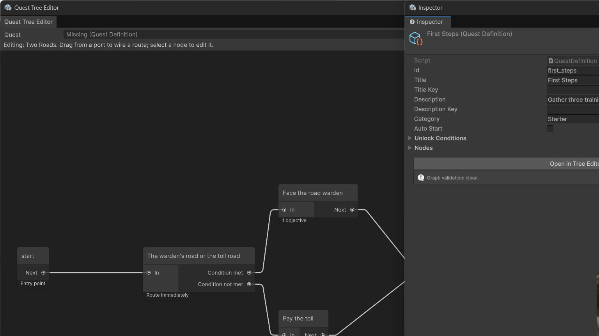

The Tree Editor
Open it from the home window (Open in Tree Editor on any quest), from Tools > ByteLura > QuestLine Pro > Tree Editor, or from a quest asset's Inspector (Open in Tree Editor button).

The canvas
The canvas is Unity's GraphView — the same grid, minimap, zoom and port wiring you know from Shader Graph. The toolbar carries a quest picker, one Add button per node kind (Start, Objective, Branch, Reward, End), Validate and Save.
Node kinds and their ports
| Node | Ports | What it carries |
|---|---|---|
| Start | Output only | The entry point. Every quest needs exactly one. |
| Objective | Input + output | Objectives (kind, target id, required count) and the rewards granted when the node completes. |
| Branch | Input + two outputs | A condition gate with two output ports: Condition met and Condition not met. Its branch mode decides what the gate does at runtime (see Branching). |
| Reward | Input + output | A node whose rewards are granted when the route passes through it; the place two roads rejoin. |
| End | Input only | The quest completes here. |
The graph is the asset
Every interaction writes straight back into the quest definition:
- An edge from a Next or Condition-met port becomes a route in the node's successor list (the met route holds a single target).
- An edge from a Condition-not-met port becomes the node's not-met target.
- Dragging a node saves its graph position.
- Deleting an edge removes the route; deleting a node scrubs its id from every route that referenced it.
Close the window, reopen the quest, and the tree is exactly as you left it. Select a node to edit its title, kind, branch mode, objectives, conditions and rewards in the right-hand panel, in plain language.
Validation
Validate runs the same checks as the home window's Catalog Health and the quest Inspector. Errors name the problem precisely — a missing Start node, an edge pointing at a node that does not exist, duplicate node ids — so the fix is always one action away.